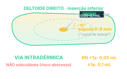
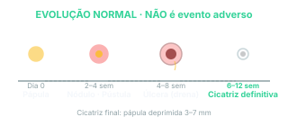

Aplicação intradérmica no deltoide direito, dose única ao nascer. A cicatriz que evolui em 6-12 semanas é normal — não é evento adverso. Conhecer o que é esperado vs o que é alerta é a base operacional.
Conceito
BCG: Bacilo Calmette-Guérin
BCG = cepa atenuada de M. bovis. Função clínica reconhecida:
Protege contra formas graves disseminadas (miliar e meníngea) em crianças < 5 anos;
NÃO previne infecção primária por M. tuberculosis;
NÃO previne TB pulmonar adulta.
É vacina "de proteção contra catástrofe", não vacina "de erradicação". Por isso a vigilância contactante e o tratamento da ILTB continuam sendo etapas indispensáveis mesmo em populações vacinadas.
Decisão · calendário PNI
Quando vacinar
Dose única ao nascer, idealmente nas primeiras 12 horas de vida (antes da alta da maternidade);
Segunda janela preferencial: até 30 dias de vida;
Pode ser aplicada até 5 anos incompletos se ainda não vacinado (PPD prévio recomendado se > 5 anos, pra evitar reação local acentuada);
Revacinação NÃO indicada rotineiramente (PNI BR descontinuou reforço aos 6 anos há mais de uma década);
Adultos não recebem BCG no calendário padrão.

Mecanismo · técnica de aplicação
Via intradérmica estrita
Via intradérmica (NÃO subcutânea — risco de abscesso);
Local: deltoide direito (BR padrão), na inserção inferior do deltoide (face lateral do braço, ~2-3 dedos abaixo do ombro);
Volume: 0,05 mL (RN < 1 ano) ou 0,1 mL (≥ 1 ano);
Material: seringa de tuberculina (1 mL) + agulha curta intradérmica;
Ângulo da agulha: ~15° em relação à pele (bisel pra cima);
Sinal de aplicação correta: pápula de ~6-8 mm imediatamente após a injeção ("casca de laranja").

Síntese · cicatriz
Evolução normal — NÃO é evento adverso
Pápula imediata (resolve em horas);
2-4 semanas: nódulo eritematoso → pústula;
4-8 semanas: pústula → úlcera de ~4-6 mm que drena pequena secreção serosa;
6 a 12 semanas: cicatriz definitiva — pápula deprimida de 3-7 mm, esbranquiçada/rosada.
É essencial diferenciar essa evolução esperada de eventos adversos: a mãe que liga preocupada com "ferida no braço do bebê" está, em 95 % dos casos, descrevendo evolução normal.
Alerta · eventos adversos
Por ordem de frequência
Úlcera grande (> 1 cm) persistente > 3 meses — geralmente conduta expectante; isoniazida tópica/oral em casos selecionados;
Abscesso frio local — drenagem cirúrgica se grande;
Linfadenite supurativa regional (axilar ou supraclavicular direita) — incidência ~1-2/1000 doses; geralmente involui espontaneamente em 2-6 meses; drenagem se grande ou drenagem espontânea; antimicobacteriana (isoniazida + rifampicina) em casos selecionados;
BCGite disseminada — raro, grave, geralmente em RN imunodeficiente (HIV vertical não diagnosticado, imunodeficiência primária); requer tratamento antifímico clássico;
Cicatriz queloide (especialmente em afrodescendentes) — cosmética;
Adiar vacinação por essas condições é erro frequente que reduz cobertura sem benefício clínico.
Recuperação ativa · 1
Descreva a técnica correta de aplicação da BCG (via, local, volume, ângulo).
Via: intradérmica estrita (NÃO subcutânea — subcutânea causa abscesso);
Local: deltoide direito, na inserção inferior do deltoide (face lateral do braço, ~2-3 dedos abaixo do ombro). O lado direito é padrão BR pra facilitar identificação da cicatriz vacinal;
Volume: 0,05 mL em RN < 1 ano; 0,1 mL em ≥ 1 ano;
Ângulo da agulha: ~15° em relação à pele, com o bisel pra cima;
Material: seringa de tuberculina (1 mL) + agulha curta intradérmica;
Sinal de aplicação correta: pápula imediata de ~6-8 mm ("casca de laranja"). Se não aparecer a pápula, suspeitar de aplicação subcutânea (que vai dar abscesso depois).
Recuperação ativa · 2
Como diferenciar evolução normal da cicatriz vacinal de evento adverso?
Evolução normal (esperada em 6-12 semanas):
Pápula imediata → resolve em horas;
2-4 semanas: nódulo eritematoso → pústula;
4-8 semanas: pústula → úlcera ~4-6 mm que drena pequena secreção serosa;
6-12 semanas: cicatriz definitiva — pápula deprimida 3-7 mm, esbranquiçada/rosada.
Febre persistente, hepatoesplenomegalia, infiltrado pulmonar disseminado → suspeitar de BCGite disseminada (raro, em RN imunodeficiente — investigar HIV vertical/imunodeficiência primária).
Critério prático: úlcera ≤ 1 cm que drena secreção serosa e tende a cicatrizar em algumas semanas = normal. Úlcera grande, abscesso volumoso, linfadenite supurativa = avaliar como evento adverso.
Recuperação ativa · 3
Quais as contraindicações absolutas da BCG e quais condições comumente confundidas que NÃO contraindicam?
Adiar vacinação por essas situações é erro que reduz cobertura sem benefício clínico — e a janela ideal de vacinação (primeiras 12 h ao nascer) pode ser perdida.